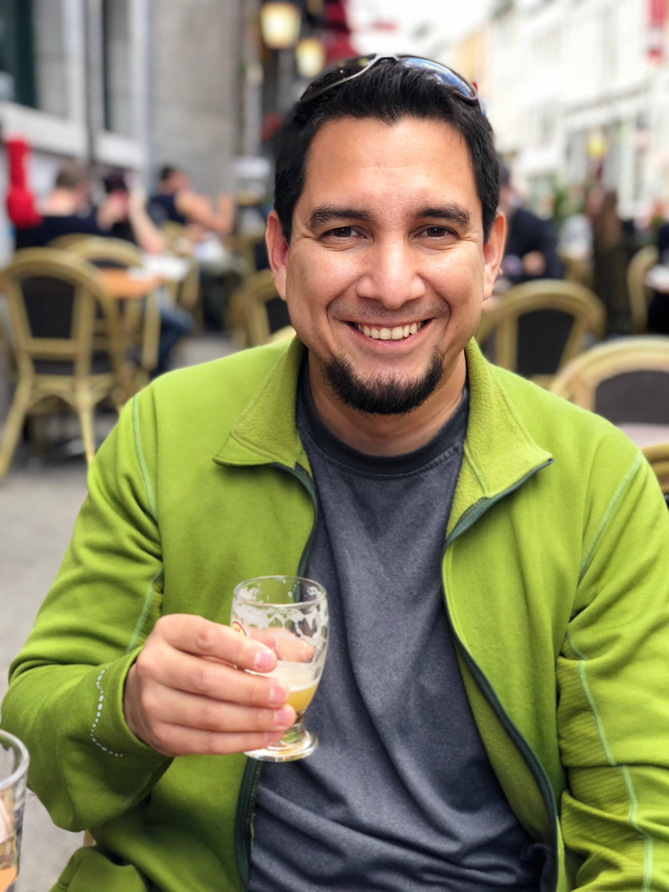

About Me
Welcome to my webpage, it'll be a work in progress but really just want to share a little bit of information about myself and showcase some of my projects. Feel free to look over and definitely would love to hear from you. Solving problems never gets old for me. Learning new skillsets along the way is invalueable. Keep on keeping on! That is a good mantra for anyone going through a full stack bootcamp.
For the past several years I've worked for a company that has experienced increditble growth in the global consumer goods markets. Program management has been my recent focus, driving operational efficiencies, leading team projects, and building analytics tools. All the while keeping our customers front of mind, and our business partners aligned. The full stack bootcamp program will be the start of a new chapter, enabling me to be prepared for future opporunities within the company.
Some hobbies indclue archery, jogging, and archery while jogging. Also I plan on doing more fishing as soon as this bootcamp is wrapped up!